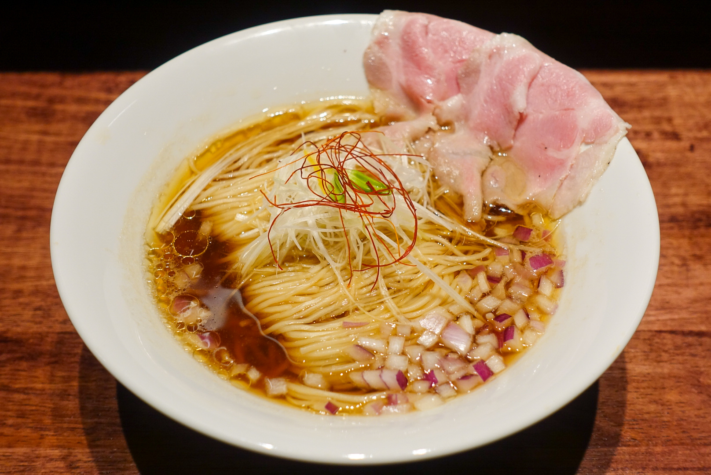
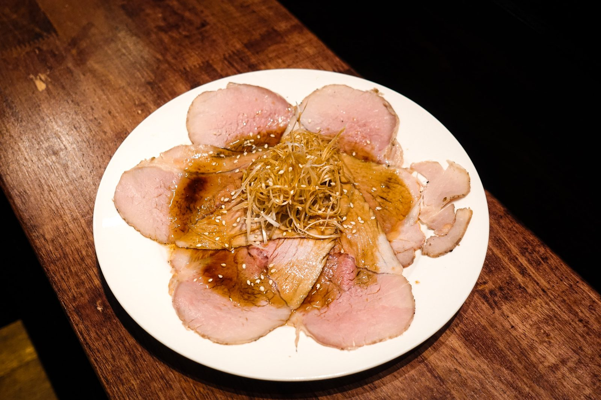

Clear Chicken Shoyu Soba
Clear chicken broth with soy sauce and a clean finish. A light bowl to close the night.
Chicken ramen supervised by Yuya Tsujita, owner of the ramen shop Menlabo Yuisou in Awaza, Osaka. Have it for lunch or at night at Tree Town, Soi Buakhao.
Menlabo opened in Pattaya in March 2024 with one bowl: Clear Chicken Shio Soba, a light broth seasoned with salt. Diners began calling it “the hidden ramen shop on Soi Buakhao,” and word slowly spread.
Yuya Tsujita owns Menlabo Yuisou, a ramen shop in Awaza, Osaka, where he makes ramen that brings out the flavor of chicken. Menlabo is its overseas branch and began in Pattaya as a ramen shop. We are now an Osaka izakaya, a Japanese pub with food to share, while our ramen remains under his supervision.
Choose tanrei, a clear, light chicken broth, or paitan, a rich, creamy chicken broth. Each comes as shio (salt) or shoyu (soy sauce).

Clear chicken broth with soy sauce and a clean finish. A light bowl to close the night.

Clear chicken broth seasoned with salt, letting the chicken come through. This is the bowl Menlabo began with.

Thick, creamy chicken broth, simmered long and seasoned with salt. Choose it when you want a richer bowl.

Creamy chicken broth with the depth and aroma of soy sauce.
Also try Jan Men, a noodle dish from Shimanto in Kochi, Japan. Its thick, savory-spicy sauce comes with garlic chives and beaten egg. At Menlabo we use rare chashu (sliced pork) instead of offal. The heat is mild.
All prices in Thai baht, VAT included
Our clear broth is made in-house from chicken bones every morning. The rich paitan broth is simmered separately.
Kaeshi is the concentrated seasoning that gives each bowl its flavor. Ours is made to our own recipe and brought in from Japan.

Orange peel gives the finishing oil a light citrus aroma, while chili adds a slight kick. If you prefer no heat, tell us when you order.

Moist, tender pork shoulder that never overpowers the chicken broth. We cook it low and slow: 3 hours and 20 minutes in 65–70℃ water.

Add a plate of tender pork belly with a seared, smoky surface to your ramen. It simmers over low heat for two hours in premium soy sauce, sake and sugar.

Drop in on your own and take one of our six counter seats. Menus are in Japanese, English and Thai.
At lunch, pair ramen with a set meal. At night, share a few Osaka izakaya dishes, then finish with a bowl of ramen. That is how we recommend enjoying Menlabo.
Order through Grab or LINE MAN. Paitan sets as it cools, so our rich, creamy chicken broth is served only at the restaurant.